Сонік Їжак
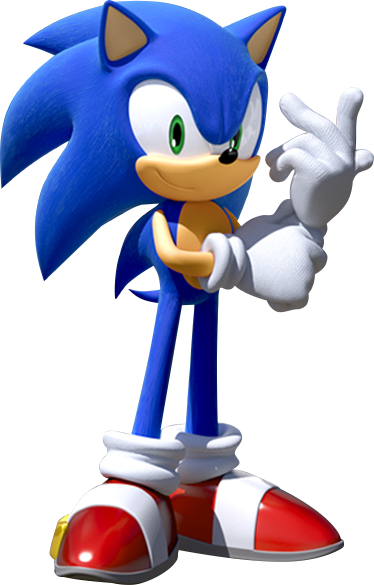
Їжак Сонік ( яп. Sonic the Hedgehog Сонікку дза Хедзіхоггу , англ. Sonic the Hedgehog ) - головний персонаж серії відеоігор Sonic the Hedgehog від компанії Sega , а також створених на її основі коміксів, мультсеріалів і повнометражних фільмів.
Сонік — синій антропоморфний їжак , створений художником Наото Осімою , програмістом Юдзі Накой та дизайнером Хірокадзу Ясухарою . Під час розробки було запропоновано безліч образів головного героя майбутньої гри, але розробники зупинилися на їжачку синього кольору. Своє ім'я Сонік отримав за здатність бігати на надзвукових швидкостях ( англ. sonic - "звуковий; зі швидкістю звуку"). Геймплей за Соніка у більшості ігор серії Sonic the Hedgehog полягає у швидкому проходженні рівнівта битвах з ворогами, для атаки яких Сонік згортається у кулю під час стрибка. Важливу роль для Соніка грають золоті каблучки, що служать йому як захист. Головним антагоністом героя є доктор Еггман , який хоче захопити світ і побудувати свою імперію «Еггманленд».
Після виходу однойменної гри за його участю Сонік швидко став популярним у всьому світі і започаткував велику медіафраншизу . Персонаж став талісманом компанії Sega, яким залишається і зараз, змінивши Алекса Кідда , який був неофіційним маскотом компанії до 1990 року . На листопад 2014 року було продано понад 150 мільйонів екземплярів ігор серії про Сонік. Крім комп'ютерних ігор, їжак Сонік є головним героєм коміксів , книг, ряду мультсеріалів і повнометражних аніме та фільмів.
Тейлз Майлз Праувер(лис)
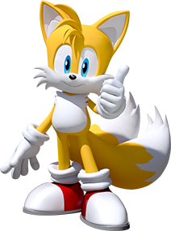
Майлз Пра́уер ( яп. Miles Pauer Майрус Пауа : , англ. Miles Prower ) , більш відомий як Тейлз ( яп. Teils Teurus , англ. Tails - «Хвостатий», в офіційному керівництві користувача до гри Sonic Generations - «Хвостат - персонаж відеоігор, мультфільмів та коміксів серії Sonic the Hedgehog . "Miles Prower" є грою слів, тому що утворено від словосполучення "miles per hour" ( укр. миль на годину ). Є молодим антропоморфнимлисиця з двома хвостами (явний натяк на кіцуне ), що дозволяють йому літати.
Дебют Тейлза відбувся у грі Sonic the Hedgehog 2 для Sega Master System та Sega Game Gear та у Sonic the Hedgehog 2 для Sega Mega Drive як ігровий персонаж .
На початку Тейлз був фанатом Соніка, ним же врятованим. Завдяки довгим тренуванням Тейлз навчився бігати практично так само швидко, як Сонік, обертаючи своїми двома хвостами як пропелером. Зрештою Сонік і Тейлз стали найкращими друзями. Він також один з найшвидших персонажів у серії, поряд з Наклзом, поступаючись у швидкості лише Соніку. Друзі Тейлза: їжак Сонік , ехідна Наклз , Емі Роуз , кролиця Крим та борсучиха Стікс .
Наклз Єхидна

Наклз - червона антропоморфна єхидна , чиї голки схожі на зачіску з численних коротких дредів. Можна помітити деяку різницю між ігровим та неігровим спрайтами Наклза. В іграх грабельний Наклз постає в яскраво-червоному кольорі із зеленими шкарпетками, а неграбальний — як червоно-рожевий із жовтими шкарпетками. За офіційними даними Наклзу 16 років. День народження, ймовірно, 2 лютого - коли вийшла перша гра за його участю - Sonic the Hedgehog 3 , однак він може бути ігровим персонажем у Sonic the Hedgehog 2 - достатньо лише використовувати картридж гри Sonic & Knuckles, в якому було задіяно технологію Lock-on. На його кулаках виділяються збільшені кісточки пальців (по 2 на кожній руці), звідси та його ім'я ( англ. knuckles - кастет). Він походить з стародавнього клану єхидн, в якому також свого часу були вождь Пачакамак і Тикал.
Емі Роуз(Їжак)
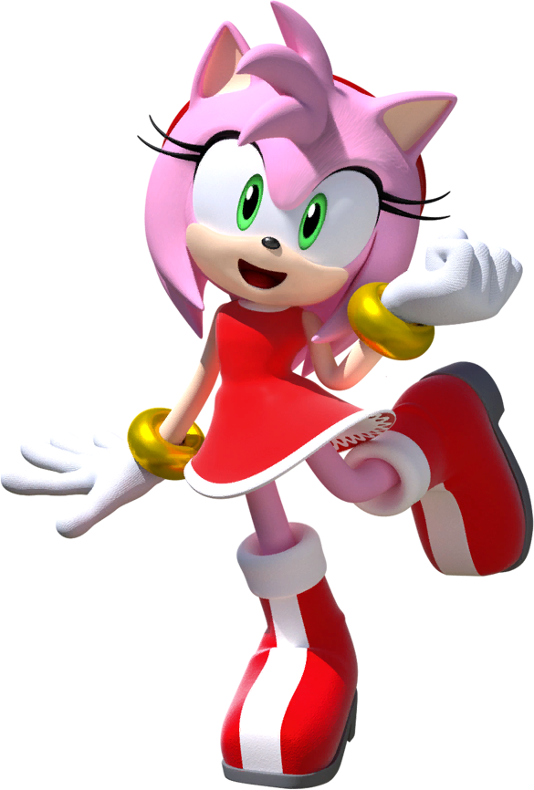
Емі Ро́уз ( яп. емі 로з Емі: Ро:дзу , англ. Amy Rose ) , в ранніх іграх також відома під ім'ям Шахрайка Розі ( яп. 로дзі за rascar Ro:дзі: дза Расукару , англ. Rosy the Rascal ) [1] - персонаж відеоігор, мультфільмів та коміксів серії Sonic the Hedgehog . Перша поява - гра Sonic the Hedgehog CD .
Героїня була створена дизайнером Sonic Team Кадзуюкі Хосіно та сценаристом Кендзі Терадою. Пізніше Емі була перероблена Юдзі Уекавой для гри Sonic Adventure . Вона - рожева антропоморфна їжачка , закохана в головного героя серії Соніка , і яка оголосила себе його дівчиною. Вона переслідує Соніка, починаючи з Sonic the Hedgehog CD та манги, і намагається завоювати його серце у всіх іграх серії, аніме та коміксах. Емі також є одним із найпопулярніших персонажів серіалу, вийшовши на п'яте місце в офіційному опитуванні за популярністю [3] .
Крім Заєць
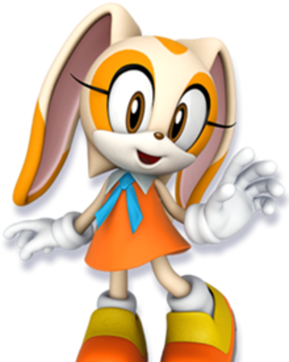
Крольчі́ха Крім ( яп. 크рім-за- 래빗 Курі:му дза Рабітто , англ. Cream the Rabbit ) — персонаж із серій ігор, аніме та коміксів Sonic the Hedgehog . Перша її поява була у грі Sonic Advance 2 для консолі Game Boy Advance .
Крім - дівчинка-кролиця. Їй 6 років, її зростання – 70 сантиметрів, вага – 12 кілограмів. Має шерстку кремового кольору, через що і отримала своє ім'я ( англ. Cream - вершки, крем) . Крім рідко можна побачити без її найкращого друга - Чао Чіза. Чіз, Крім та бджола Чармі – наймолодші персонажі всесвіту Соніка.
Біг
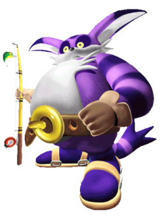
Біг - антропоморфний великий і товстий 18-річний фіолетовий кіт зріст 200 сантиметрів і вагою 280 кілограмів , що робить його одним з найважчих немеханічних персонажів серії. Біг також є одним із небагатьох персонажів цієї серії, що носять сандалі . Він живе у джунглях, що оточують Містичні руїни.
Біг - рибалка по життю і живе зі своїм другом жабом Фроггі ( яп. 蛙君 Каеру кун , англ. Froggy ) . Його день народження, ймовірно, 23 грудня . Характер - простодушний.
Доктор Айво Робітник(Еггман)
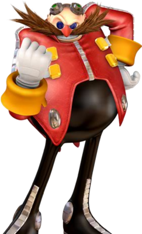
Еггман - злісний, супергеніальний (його IQ дорівнює 300 балам) доктор, який намагається захопити владу над усім світом і створити країну під назвою "Еггманленд" ( англ. Eggmanland ), населену покірними йому роботами (у мультсеріалах Sonic the Hedgehog і Sonic Underground ), в іграх Sonic Unleashed та Sonic Forces йому це навіть вдається. Еггман є головним ворогом їжачка Соніка , який протистоїть втіленню планів лиходія.
Носить червоний піджак, чорні штани та синьо-фіолетові окуляри. Зростання – 1 метр 85 сантиметрів, вага – 128 кілограмів. Тулуб має форму яйця. Вік невідомий.
В англомовному керівництві до першої гри серії, Sonic the Hedgehog, як повне ім'я персонажа було вказано «Доктор Айво Роботник», а в японському керівництві персонажа називали «Доктор Еггман». Лише у 1999 році, в англомовній версії Sonic Adventure лиходія називали і «Еггманом», і «Робітником», і з тих пір у всіх наступних релізах його називають виключно як «Доктор Еггман». Програміст Юдзі Нака пояснив, що "Робітник" - це справжнє прізвище вченого, а "Еггман" - прізвисько, дане йому через статуру яйцеподібної форми.
Метал Сонік
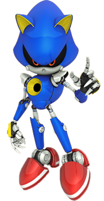
Метал Сонік [К 1] ( яп. MetalsonicMetaru Sonicku , англ. Metal Sonic ) - персонаж із серії комп'ютерних ігор, коміксів і мультфільмів Sonic the Hedgehog . Робот , створений доктором Еггманом для знищення їжака Соніка .
Зовнішній вигляд Метал Соніка був створений за подобою їжака Соніка. Автором персонажа є дизайнер Кадзуюкі Хосіно, який також розробив образ Емі Роуз . Метал Сонік створювався як противник , здатний зрівнятися із Соником за швидкістю та іншим його здібностям. У результаті розробники вирішили реалізувати ідею у вигляді створеного професором Еггманом робота, чиїм завданням було зміна минулого. Згодом персонаж з'являвся в пізніх іграх франшизи, серед яких примітна Sonic Heroes , де він отримав новий оновлений дизайн і став головним антагоністом гри, зрадивши Еггмана та очоливши його армію роботів. Крім пересування на високій швидкості, якою персонаж досягає завдяки реактивному двигунуна спині, одними з найбільш демонстрованих здібностей Метал Соніка є можливість стріляти лазером з гармати на животі, виклик енергетичного поля , мімікрію здібностей інших героїв, а також зміна зовнішності.
Преса позитивно зустріла персонажа. Метал Сонік займав лідируючі позиції як у голосуваннях серед фанатів, і у списках, складених професійними критиками. Деякі рецензенти називали Метал Соніка найкращим витвором доктора Еггмана, одним з головних переваг гри Sonic the Hedgehog CD , а також порівнювали його з Термінатором з однойменної серії фільмів .
Шедоу Їжак
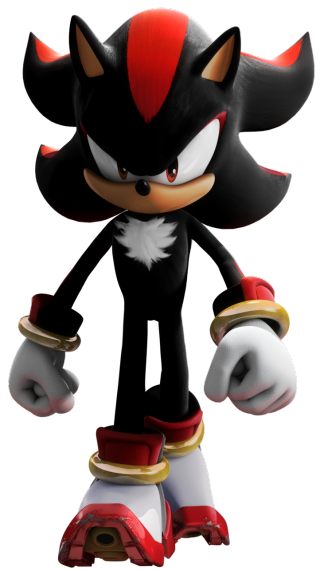
Шедоу - чорний антропоморфний їжак якому 50 років, створений Sega як протилежність протагоніст серії їжу Сонику . Ідея створення персонажа прийшла під час розробки Sonic Adventure 2 . За підсумками кількох обговорень було вирішено зробити основною темою гри протистояння між добром та злом . Спеціально для платформера розробники створили двох нових персонажів для «темної» сторони: їжака Шедоу і кажан Руж . Характер їжака та його загальний задум належали геймдизайнеру Такасі Іідзуке , тоді як за зовнішній вигляд відповідав художник Юдзі Уекава . Крім можливості пересуватися знадзвуковою швидкістю , Шедоу має прийом chaos control , завдяки якому він може переміщатися в часі та просторі за допомогою Ізумруду Хаосу.
Спочатку Шедоу повинен був з'явитися тільки в Sonic Adventure 2 , проте через велику популярність персонажа серед фанатів франшизи, Sonic Team прийняла рішення використати його і в наступних проектах, одним з яких згодом стала окрема гра про чорне їжаки . Думки журналістів про героя розійшлися: одні вважали його непоганим антагоністом та суперником Соніка, тоді як інші назвали Шедоу одним із «зайвих» персонажів серії ігор Sonic the Hedgehog .
Руш Літуча Миша
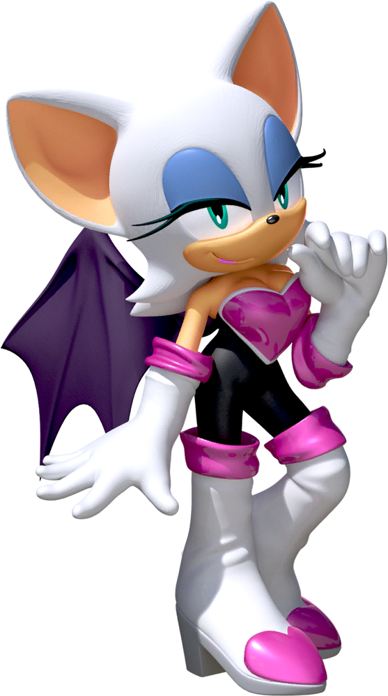
Руж - 18-річна антропоморфна кажан з білим волоссям, одягнена в чорний костюм, що облягає, з візерунком у вигляді серця, носить довгі рукавиці і високі чоботи з металевими підборами. У Sonic Heroes та серії Sonic Riders героїня носить різні вбрання, але у схожій колірній гамі та присутні деталі у вигляді серця. Вона також має костюми в Sonic Adventure 2 .
Кажан Руж є професійним мисливцем за скарбами . Вона також називає себе «Найбільшим злодієм у світі», і безстрашно робить потрібне, нехтуючи небезпекою та ігноруючи почуття інших. Крім того, вона є шпигуном організації "GUN" . Її «жіноча чарівність» створює в характері недбалість, але насправді вона інтригує і вміє маніпулювати іншими . Руж таємно закохана в єхидну Наклза , який охороняє Майстер Ізумруд . Однак у керівництві гри Sonic the Hedgehog зазначено, що її почуття до їжака Шедоу аналогічні почуттям до Наклзу . У мультсеріалі «Sonic X » кажан також симпатизує їжу. Героїня бореться насамперед ногами, особливо часто користується прийомом «удар гвинтом» ( англ. Screw Kick ), і може літати на далекі відстані за допомогою крил .
Блейз Кішка
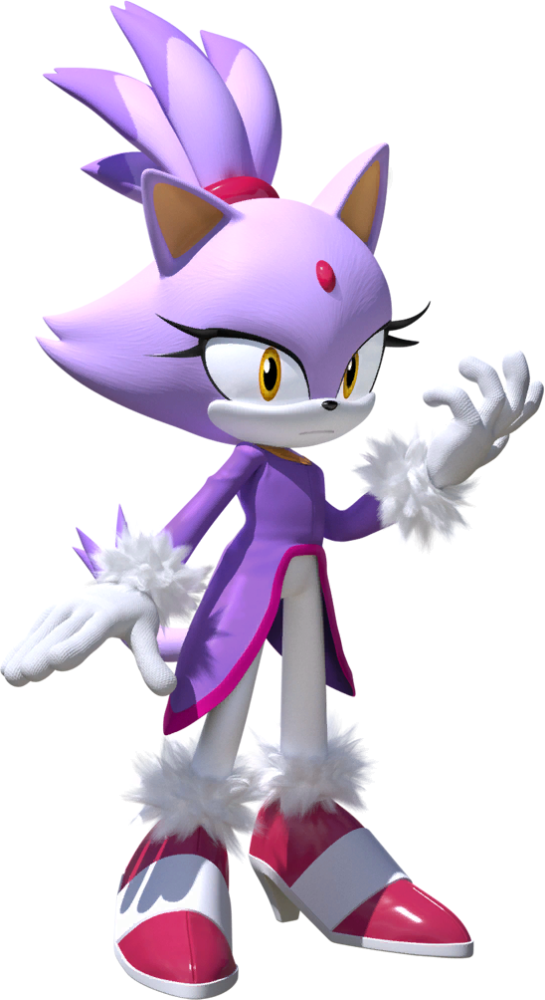
Блейз - 14-річна [1] антропоморфна кішка фіолетового кольору. У звичайному стані вона стримана і сором'язлива, але коли починає виходити з себе, стає жорстокою. Вона любить бути в компанії своїх друзів, хоч і не легка у спілкуванні з ними. Блейз насолоджується своєю роллю принцеси, яка повинна охороняти Сол Ізумруди - протилежність Ізумрудів Хаосу, які захищає єхидна Наклз . Блейз також може використовувати ці смарагди, щоб досягти своєї «супер-форми» - Burning Blaze ( рус. Пекуче полум'я ), аналогічно супер-формі їжака Соніка . Блейз є дуже норовливою кішкою, але може бути доброю і співчутливою.
Сільвер Їжак
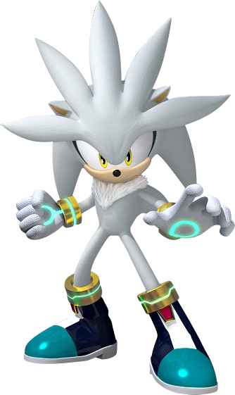
Сільвер - 14-річний антропоморфний їжак білого кольору, вагою 35 кілограм і зростом 100 сантиметрів, що живе через 200 років після подій ігор серії [1] . Він описується як «має сильне почуття справедливості». Сільвер також дуже дбайливий, наївний та легко піддається впливам. Багато сценах Sonic the Hedgehog Блейз згадує, що Сільвер дуже наївний, а також заявляє, що «Він стає невпевненим, коли залишається один». Однак білий їжак дуже дбайливий і добрий, це здавалося коли він взявся допомагати Емі знайти Соніка, а також коли віддав Еліс Смарагд Хаосу.
Вектор
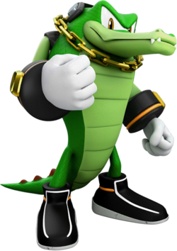
Вектор - Один із членів команди хаотікс,яка займається детективством.Йому 20 років.
Еспіо
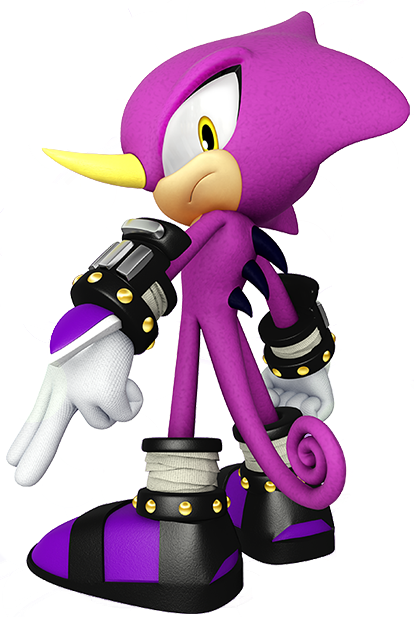
Еспіо - Один із членів команди хаотікс,яка займається детективством.Йому 16 років.
Чармі
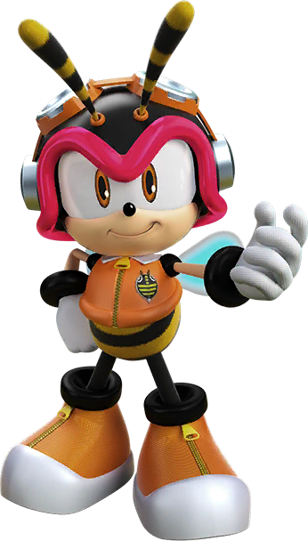
Чармі Бі (チ ャ ー ミ ー ・ ビ ー Chāmī Bī ? ) , або просто Чармі , — вигадана головна героїня серії відеоігор Sonic , вироблена SEGA та розроблена японською студією Sonic Team .
Чармі — молодий самець бджоли . Він входить до детективного агентства Chaotix, для якого працює разом з крокодилом Вектором і хамелеоном Еспіо , тут вони вирішують різні види справ, які йому довіряють.Йому 6 років.
Майті
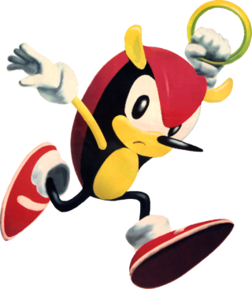
Майті - Броненосець який шукає пригоди разом з літучою білкою Рею.Йому 16 років.
Літуча білка Рей

Рей - шукач пригод який дружить з Майті.Йому 6 років.
Барк
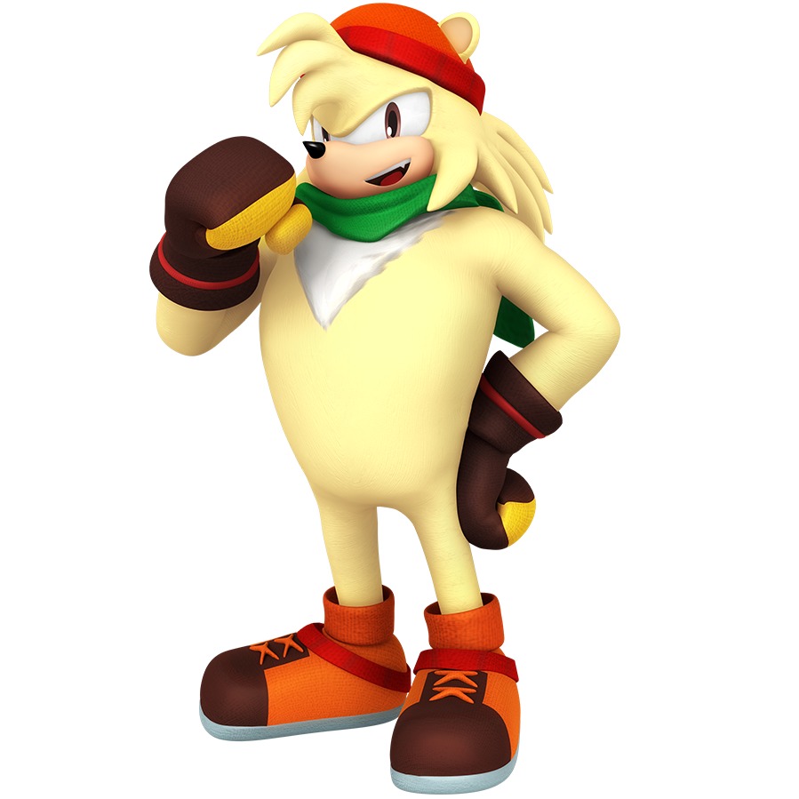
Барк — величезний (майже вдвічі вищий за Соніка ) полярний ведмідь із золотистою шкірою та чорними очима. Він одягнений у зимову шапку, а верхню частину його тулуба покриває шарф зеленого кольору. На відміну від більшості персонажів серії, Барк взутий у міцні зашнуровані черевики, а на руках нього - шкіряні рукавиці (що нагадують боксерські рукавички) з жовтою облямівкою.
Фенг
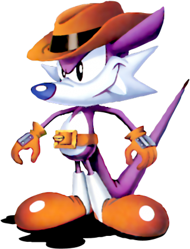
Снайпер Фэнг (англ. Fang the Sniper , яп. Fang the Sniper - Fangu za Sunaipā ) , також відомий як Ласка Нек (англ. Nack the Weasel ) - є персонажем у серії ігор Sonic the Hedgehog . Він — антропоморфна тварина, помісь тушканчика і вовка, і мисливець за скарбами, що живе в Спеціальній стадії , який намагається отримати в свої руки всі смарагди Хаосу як грошові цілі [3] . Він спритний лиходій, але його прагнення незначні. Фенг використовує свій попган як свою основну зброю та машину Чудову королевуяк вид транспорту.
Бін
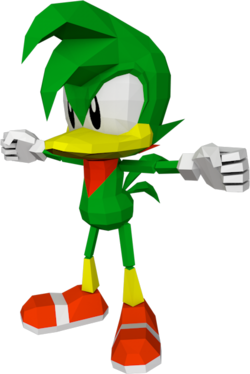
Бін Динаміт (англ. Bean the Dynamite , яп. бен-за - дінамііт- Bīn za Dainamaito ) - грабельний персонаж у грі «Sonic the Fighters». Він — антропоморфний дятел, який змагався у бойовому турнірі за смарагди Хаосу та право знищити Яйце смерті II . У бою Бін здатний кидати необмежену кількість бомб для своєї розваги, а також захисту.
Яструб Джет
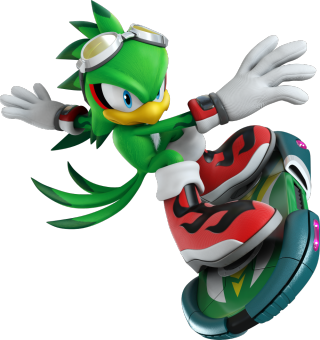
Яструб Джет (англ. Jet the Hawk , яп. Jetto za Hōku ) – персонаж із серії ігор « Sonic the Hedgehog ». Він антропоморфний яструб і лідер нинішнього покоління Вавилонських розбійників. Джет відомий як Легендарний Майстер Вітру ( професор Densetsu No Kaze Tsukai ) завдяки своїй майстерності екстремальної їзди на дошці, яка принесла йому велику репутацію.
Зухвалий і буйний, Джет дуже зарозумілий, гордий і завжди шукає багатства та статки. У той час як він є лідером Вавилонських розбійників, яструб рідко приймає свої обов'язки всерйоз, хоча він знає, як утвердити свою владу. Незважаючи на всі тіньові характеристики, Джет є почесним екстремальним гонщиком.
З моменту програшу їжу Соніку в екстремальному спорядженні Джет зберіг інтенсивне суперництво з ним. Коли-небудь конкурентоспроможний, яструб зробив його своєю головною метою, щоб перемогти кращого Соніка у швидкості і претендувати на свій титул як найшвидша річ у Всесвіті.
Ластівка Вейв
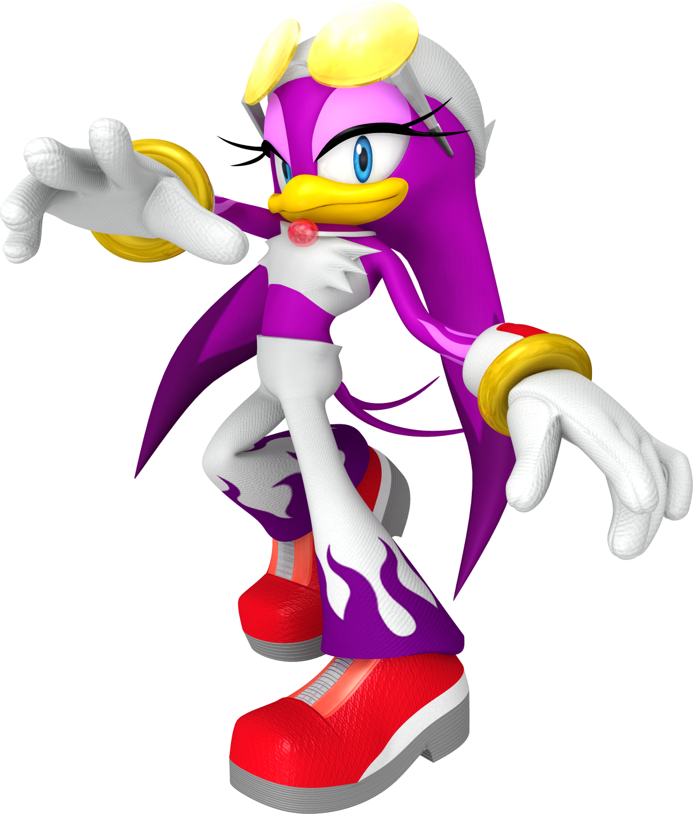
Ластівка Вейв (англ. Wave the Swallow , яп. Wave the Swallow Uēbu za Suwarō ) - персонаж із серії Sonic the Hedgehog. Антропоморфна ластівка, як і її неназваний батько, є технічним і механічним експертом нинішнього покоління Вавилонських розбійників .
Альбатрос Шторм
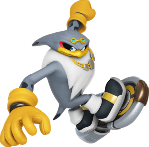
Альбатрос Шторм — ігровий персонаж у серії ігор « Sonic the Hedgehog ». Він є антропоморфним альбатросом і найсильнішим членом нинішнього покоління Вавилонських розбійників . Шторм - незграбний індивід, який має неймовірну фізичну силу, що дозволяє йому знищувати практично все на своєму шляху.
Емерл
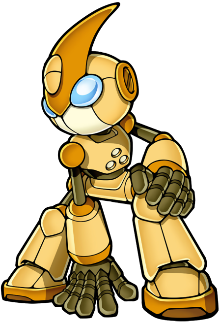
Емерл (англ. Emerl ) - персонаж серії ігор " Sonic the Hedgehog ". Він створений понад 4000 років тому робот-гізоїд, що вміє копіювати здібності інших персонажів.
На початок